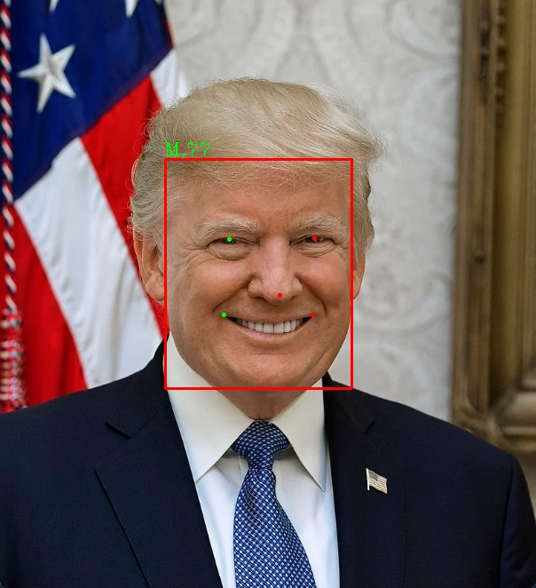
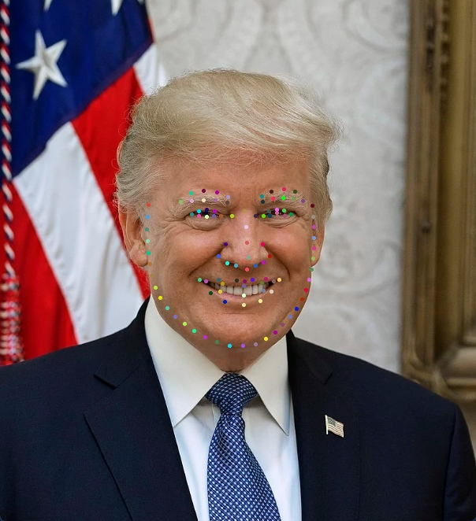
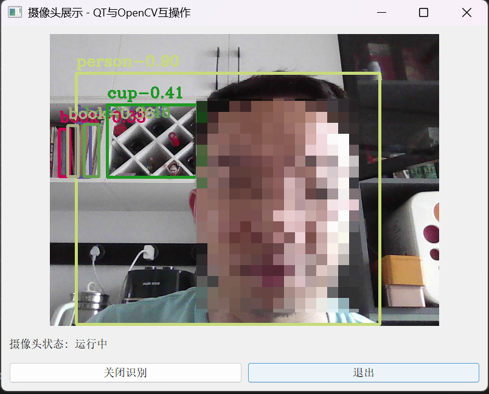
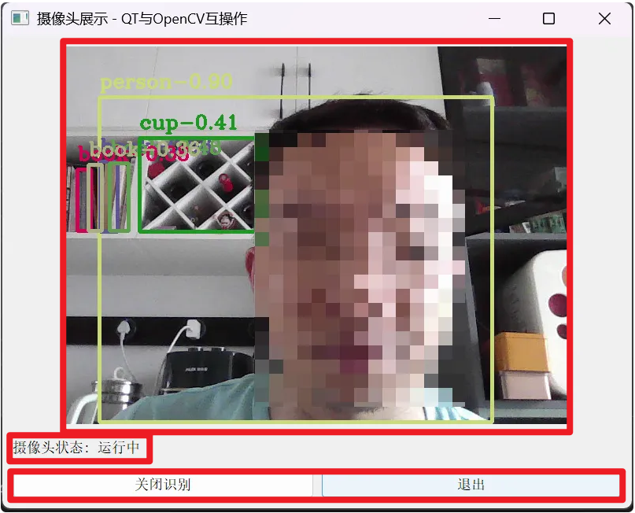

<!DOCTYPE lake>
<h2 data-lake-id="cdArG" id="cdArG"><span data-lake-id="u9118e999" id="u9118e999" style="color: rgb(30, 32, 34); background-color: rgb(248, 249, 250)">解释概述</span></h2><p data-lake-id="u2ac947f0" id="u2ac947f0"><span data-lake-id="uf8de176a" id="uf8de176a">人脸检测是指在图像或视频中检测出人脸的位置和大小。这个过程通常使用计算机视觉技术来实现。计算机会根据一些特征，比如肤色、面部轮廓等，来判断图像中是否存在人脸，并且确定人脸的位置和大小。人脸检测在很多应用中都有广泛的应用，比如人脸识别、视频监控等。</span></p><p data-lake-id="u34df1166" id="u34df1166"><span data-lake-id="ubbb595e3" id="ubbb595e3">​</span><br/></p><p data-lake-id="u18fa48a9" id="u18fa48a9"><span data-lake-id="u02fa519f" id="u02fa519f">人脸识别是指在已知的人脸数据库中匹配并识别出一张或多张人脸。这个过程通常使用人工智能和机器学习技术来实现。计算机会通过学习已知的人脸数据库中的特征，比如面部轮廓、眼睛位置等，来识别新的人脸。人脸识别在安全领域、社交媒体等方面都有广泛的应用。</span></p><p data-lake-id="u683847fb" id="u683847fb"><br/></p><h1 data-lake-id="58919958" id="58919958"><span data-lake-id="ue3ad6e50" id="ue3ad6e50">Robotpipe</span></h1><p data-lake-id="u90728784" id="u90728784"><br/></p><p data-lake-id="u55469be8" id="u55469be8"><span data-lake-id="u4230661a" id="u4230661a">robotpipe Python Library is an artificial intelligence learning library, including mainstream advanced artificial intelligence libraries, such as InsightFace, yolov8, paddleocr, etc.</span></p><p data-lake-id="u1728e315" id="u1728e315"><br/></p><p data-lake-id="u549d35b4" id="u549d35b4"><span data-lake-id="u5baffd65" id="u5baffd65">本项目具备如下推理功能：</span></p><p data-lake-id="u7445473d" id="u7445473d"><br/></p><ul list="u339a231a"><li data-lake-id="uba596b8d" fid="u5d86f2e6" id="uba596b8d"><span data-lake-id="ue5f1d1a9" id="ue5f1d1a9">人脸检测</span></li><li data-lake-id="u5cadf763" fid="u5d86f2e6" id="u5cadf763"><span data-lake-id="uc8155fc0" id="uc8155fc0">人脸识别</span></li><li data-lake-id="uddab239f" fid="u5d86f2e6" id="uddab239f"><span data-lake-id="ue8046d5a" id="ue8046d5a">人脸年龄与性别识别</span></li><li data-lake-id="uaf8fdf97" fid="u5d86f2e6" id="uaf8fdf97"><span data-lake-id="ubcc01eb8" id="ubcc01eb8">人脸106个特征点</span></li><li data-lake-id="u8aeafab8" fid="u5d86f2e6" id="u8aeafab8"><span data-lake-id="u6b55f52b" id="u6b55f52b">换脸</span></li></ul><p data-lake-id="ua0071301" id="ua0071301"><br/></p><p data-lake-id="ud23cb0bb" id="ud23cb0bb"><a data-lake-id="ud7baee23" href="https://space.bilibili.com/485304569" id="ud7baee23" rel="noopener noreferrer" target="_blank"><span data-lake-id="u6ab0a206" id="u6ab0a206">B站演示地址</span></a></p><p data-lake-id="u34e76db6" id="u34e76db6"><br/></p><h2 data-lake-id="e655a410" id="e655a410"><span data-lake-id="ub15f250f" id="ub15f250f">安装</span></h2><p data-lake-id="u922c92e7" id="u922c92e7"><span data-lake-id="ud8a1d6a6" id="ud8a1d6a6">安装opencv</span></p><span class="yuque-card-unsupported">[codeblock]</span><p data-lake-id="ueeae8a76" id="ueeae8a76"><span data-lake-id="u4bf3db28" id="u4bf3db28">安装onnxruntime</span></p><span class="yuque-card-unsupported">[codeblock]</span><p data-lake-id="u00b6f35d" id="u00b6f35d"><span data-lake-id="ue270aadd" id="ue270aadd">若你的电脑支持gpu,可以进入如下安装</span></p><span class="yuque-card-unsupported">[codeblock]</span><p data-lake-id="u0fe86fae" id="u0fe86fae"><span data-lake-id="u7c290a44" id="u7c290a44">pip安装</span></p><span class="yuque-card-unsupported">[codeblock]</span><p data-lake-id="u328060b1" id="u328060b1"><span data-lake-id="ue0fc7ab2" id="ue0fc7ab2">目前仅支持python3.11版本</span></p><p data-lake-id="ud4c92af3" id="ud4c92af3"><a class="yuque-card-link" href="../../_assets/2046ea613a8f82d8bf37a38d.zip">robotpipe-0.0.9-cp311-cp311-win_amd64.zip</a></p><p data-lake-id="u05c5b8be" id="u05c5b8be"><br/></p><h3 data-lake-id="8b7dc6a5" id="8b7dc6a5"><span data-lake-id="u9e7f795e" id="u9e7f795e">导入模型文件</span></h3><p data-lake-id="u0e77a7f0" id="u0e77a7f0"><span data-lake-id="ue42fdfe8" id="ue42fdfe8">在用户目录下新建</span><code data-lake-id="ue9f4c712" id="ue9f4c712"><span data-lake-id="u150290a3" id="u150290a3">.robotpipe</span></code><span data-lake-id="ueb536822" id="ueb536822">文件夹</span></p><span class="yuque-card-unsupported">[codeblock]</span><p data-lake-id="u70de3d16" id="u70de3d16"><br/></p><p data-lake-id="u30ba515d" id="u30ba515d"><span data-lake-id="u4c8d1239" id="u4c8d1239">从百度网盘中下载权重文件,并解压释放进去</span></p><p data-lake-id="uc8bba844" id="uc8bba844"><br/></p><h2 data-lake-id="cb294524" id="cb294524"><span data-lake-id="ua54d85c3" id="ua54d85c3">功能演示</span></h2><h3 data-lake-id="4be5769c" id="4be5769c"><span data-lake-id="u144ee2f2" id="u144ee2f2">人脸检测</span></h3><p data-lake-id="u2034a4ff" id="u2034a4ff" style="text-align: center"></p><p data-lake-id="u7869cf75" id="u7869cf75"></p><p data-lake-id="uaed60ddc" id="uaed60ddc"><br/></p><span class="yuque-card-unsupported">[codeblock]</span><p data-lake-id="u62caaa92" id="u62caaa92"><br/></p><h3 data-lake-id="e8415821" id="e8415821"><span data-lake-id="u4ba0562e" id="u4ba0562e">人脸识别</span></h3><p data-lake-id="u8c660743" id="u8c660743" style="text-align: center"></p><p data-lake-id="u30befd74" id="u30befd74"></p><p data-lake-id="u87b297d6" id="u87b297d6"><br/></p><span class="yuque-card-unsupported">[codeblock]</span><p data-lake-id="uc662584d" id="uc662584d"><br/></p><h3 data-lake-id="fb9ee54a" id="fb9ee54a"><span data-lake-id="u8d6f92cf" id="u8d6f92cf">人脸年龄与性别识别</span></h3><p data-lake-id="u3c770fe7" id="u3c770fe7" style="text-align: center"></p><span class="yuque-card-unsupported">[codeblock]</span><p data-lake-id="u133a9aed" id="u133a9aed"><br/></p><h3 data-lake-id="808edf06" id="808edf06"><span data-lake-id="u9aa9a7ca" id="u9aa9a7ca">人脸106个特征点</span></h3><p data-lake-id="uc910d1e5" id="uc910d1e5" style="text-align: center"></p><span class="yuque-card-unsupported">[codeblock]</span><p data-lake-id="uadf4e6bd" id="uadf4e6bd"><br/></p><h3 data-lake-id="fc1b5d4e" id="fc1b5d4e"><span data-lake-id="u5a27d7b0" id="u5a27d7b0">换脸</span></h3><p data-lake-id="ua7f5b48b" id="ua7f5b48b" style="text-align: center"></p><span class="yuque-card-unsupported">[codeblock]</span><p data-lake-id="u80d9ccff" id="u80d9ccff"><br/></p><h3 data-lake-id="gUsAz" id="gUsAz"><span data-lake-id="u246d9f93" id="u246d9f93">YOLO</span></h3><span class="yuque-card-unsupported">[codeblock]</span><p data-lake-id="u2ca39bd2" id="u2ca39bd2"><br/></p><h3 data-lake-id="eLs0u" id="eLs0u"><span data-lake-id="u7b4c6681" id="u7b4c6681">案例：桌面识别客户端</span></h3><p data-lake-id="ua4dba5dd" id="ua4dba5dd"><span data-lake-id="u36c39648" id="u36c39648">这是一个PYQT与robotpipe综合演示案例，我们通过opencv采集图片，然后使用robotpipe对数据进行识别，最后使用PYQT将数据展示在画面上。</span></p><p data-lake-id="uc2761312" id="uc2761312" style="text-align: center"></p><h4 data-lake-id="GCgzB" data-lake-index-type="2" id="GCgzB"><span data-lake-id="u830fbc2c" id="u830fbc2c">复制转换代码</span></h4><p data-lake-id="ud13cd29c" id="ud13cd29c"><span data-lake-id="u455b284d" id="u455b284d">由于PYQT有自己的图片格式，Opencv也有自己的格式，所以我们需要一个工具函数，能实现这两者之间的格式互转</span></p><p data-lake-id="ud2c01efa" id="ud2c01efa"><span data-lake-id="u6444f9a1" id="u6444f9a1">复制如下转换代码</span></p><span class="yuque-card-unsupported">[codeblock]</span><h4 data-lake-id="CClOs" data-lake-index-type="2" id="CClOs"><span data-lake-id="u280538bd" id="u280538bd">实现PYQT代码</span></h4><h5 data-lake-id="hOKYf" data-lake-index-type="2" id="hOKYf"><span data-lake-id="u9ca94828" id="u9ca94828">分析画面结构</span></h5><p data-lake-id="u74611eba" id="u74611eba" style="text-align: center"></p><h5 data-lake-id="cZxfR" data-lake-index-type="2" id="cZxfR"><span data-lake-id="u5b9e20f5" id="u5b9e20f5">编写代码</span></h5><h6 data-lake-id="faFlq" data-lake-index-type="2" id="faFlq"><span data-lake-id="u59e6da95" id="u59e6da95">导包</span></h6><span class="yuque-card-unsupported">[codeblock]</span><h6 data-lake-id="awtnr" data-lake-index-type="2" id="awtnr"><span data-lake-id="u34786b76" id="u34786b76">新建CameraApp</span></h6><span class="yuque-card-unsupported">[codeblock]</span><h6 data-lake-id="llM96" data-lake-index-type="2" id="llM96"><span data-lake-id="uc1da778e" id="uc1da778e">第一行画面</span></h6><span class="yuque-card-unsupported">[codeblock]</span><h6 data-lake-id="p9YAb" data-lake-index-type="2" id="p9YAb"><span data-lake-id="ubdc89940" id="ubdc89940">第二行状态</span></h6><span class="yuque-card-unsupported">[codeblock]</span><h6 data-lake-id="zFxWv" data-lake-index-type="2" id="zFxWv"><span data-lake-id="u70f325f2" id="u70f325f2">第三行按钮</span></h6><span class="yuque-card-unsupported">[codeblock]</span><h6 data-lake-id="CHPG1" data-lake-index-type="2" id="CHPG1"><span data-lake-id="u88887b12" id="u88887b12">初始化robotpipe</span></h6><span class="yuque-card-unsupported">[codeblock]</span><h6 data-lake-id="bBdpj" data-lake-index-type="2" id="bBdpj"><span data-lake-id="u89c2f4a1" id="u89c2f4a1">初始化转换器</span></h6><span class="yuque-card-unsupported">[codeblock]</span><h6 data-lake-id="Mw2lD" data-lake-index-type="2" id="Mw2lD"><span data-lake-id="u211ce6c7" id="u211ce6c7">开启摄像头</span></h6><span class="yuque-card-unsupported">[codeblock]</span><h6 data-lake-id="ptt2e" data-lake-index-type="2" id="ptt2e"><span data-lake-id="ua6e20cf9" id="ua6e20cf9">刷新图像数据</span></h6><span class="yuque-card-unsupported">[codeblock]</span><h6 data-lake-id="PHRpe" data-lake-index-type="2" id="PHRpe"><span data-lake-id="ucbb73d60" id="ucbb73d60">切换识别模式</span></h6><span class="yuque-card-unsupported">[codeblock]</span><p data-lake-id="u3dff3434" id="u3dff3434"><br/></p><h2 data-lake-id="axYHt" id="axYHt"><span data-lake-id="u3914f1e3" id="u3914f1e3">可能遇到的问题</span></h2><p data-lake-id="u9a8b73c3" id="u9a8b73c3"><br/></p><p data-lake-id="u27349f7e" id="u27349f7e"><span data-lake-id="ud66234c6" id="ud66234c6">若运行代码出现一下错误，则是</span><code data-lake-id="udb30e2d0" id="udb30e2d0"><span data-lake-id="ue08b07a4" id="ue08b07a4">opencv-python-headless</span></code><span data-lake-id="u17b93c61" id="u17b93c61">与</span><code data-lake-id="u90031fac" id="u90031fac"><span data-lake-id="ua1992458" id="ua1992458">opencv-python</span></code><span data-lake-id="ud2c1b149" id="ud2c1b149">版本不匹配的原因</span></p><p data-lake-id="uc896dcd5" id="uc896dcd5"><br/></p><span class="yuque-card-unsupported">[codeblock]</span><p data-lake-id="u10bd931b" id="u10bd931b"><br/></p><p data-lake-id="u3b67aa03" id="u3b67aa03"><span data-lake-id="ue7932a21" id="ue7932a21">卸载</span><code data-lake-id="ua18bc6f3" id="ua18bc6f3"><span data-lake-id="u7e050e94" id="u7e050e94">opencv-python-headless</span></code><span data-lake-id="ubb91789c" id="ubb91789c">,重新安装</span></p><p data-lake-id="ue5abc45e" id="ue5abc45e"><br/></p><span class="yuque-card-unsupported">[codeblock]</span><p data-lake-id="uf2957976" id="uf2957976"><br/></p><p data-lake-id="ubfffd8b6" id="ubfffd8b6"><span data-lake-id="u566dca9f" id="u566dca9f">本项目参考以下工程:</span></p><p data-lake-id="uf2db1582" id="uf2db1582"><br/></p><p data-lake-id="u23afb6a1" id="u23afb6a1"><a data-lake-id="u12a0f226" href="https://insightface.ai/" id="u12a0f226" rel="noopener noreferrer" target="_blank"><span data-lake-id="u8c1b226c" id="u8c1b226c">InsightFace</span></a></p><p data-lake-id="u330e34f1" id="u330e34f1"><a data-lake-id="ud9df99a3" href="https://github.com/PaddlePaddle/PaddleOCR" id="ud9df99a3" rel="noopener noreferrer" target="_blank"><span data-lake-id="u3bde486d" id="u3bde486d">PaddleOCR</span></a></p><p data-lake-id="u48016658" id="u48016658"><a data-lake-id="u5baa07eb" href="https://github.com/ultralytics" id="u5baa07eb" rel="noopener noreferrer" target="_blank"><span data-lake-id="uee596ba0" id="uee596ba0">yolov8</span></a><span data-lake-id="u6295ae61" id="u6295ae61">​</span></p><p data-lake-id="u3090283f" id="u3090283f"><span data-lake-id="u360c8393" id="u360c8393">​</span><br/></p><p data-lake-id="u9f79b65b" id="u9f79b65b"><span data-lake-id="u352ba886" id="u352ba886">​</span><br/></p><p data-lake-id="u8795d16b" id="u8795d16b"><span data-lake-id="u012c3fbc" id="u012c3fbc">​</span><br/></p>